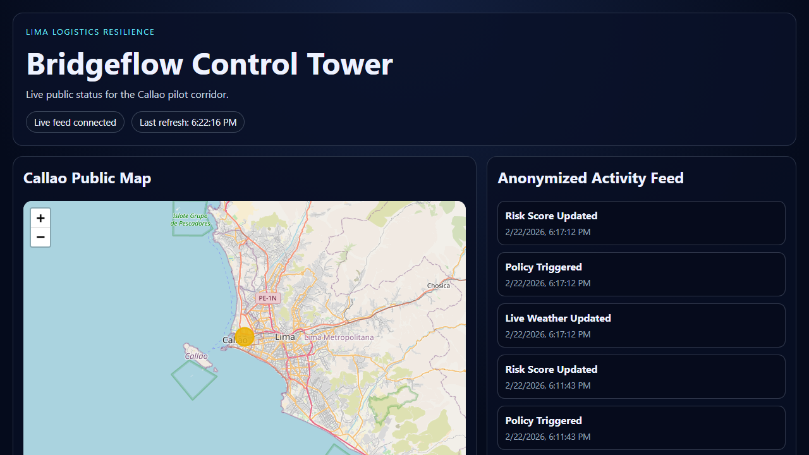

Bridgeflow Control Tower Docs
Bridgeflow is a logistics runtime that enforces policy across distributed systems. You keep your ERP/WMS/TMS; Bridgeflow ingests events, applies rules, and coordinates exception handling in real time.
1. Start Here (New Users and Partners)
Live Demo
- Public Control Tower: control-tower.up.railway.app

Key Capabilities
- TRL 7 validated live loop (Event -> Policy -> Risk -> Case).
- Autonomous case creation with SLA assignment.
- Live risk scoring and public resilience visibility.
Why It Matters: Lima Pilot
In the Callao/Lima pilot, Bridgeflow moved from mock data to live weather ingestion and autonomous response. On February 20, 2026, the system completed the full chain from live signal to policy execution and case creation, proving production-ready operations.
2. Developer Quickstart (Integrators)
Goal: connect your system and send your first event.
- Get an API key/token:
current/control-tower/integration-guide/ - Send your first event in under 5 minutes:
topics/quickstart/ - Verify and monitor through the API:
current/control-tower/public-api/
3. Deep Dives (Architecture and Vision)
- Current System: how the Control Tower works today (events, policy engine, cases):
topics/concepts/ - Future Vision (BF-INTEGRATION): enterprise roadmap and archived design vision:
topics/vision/ - TRL 7 validation details:
current/control-tower/trl7-validation/